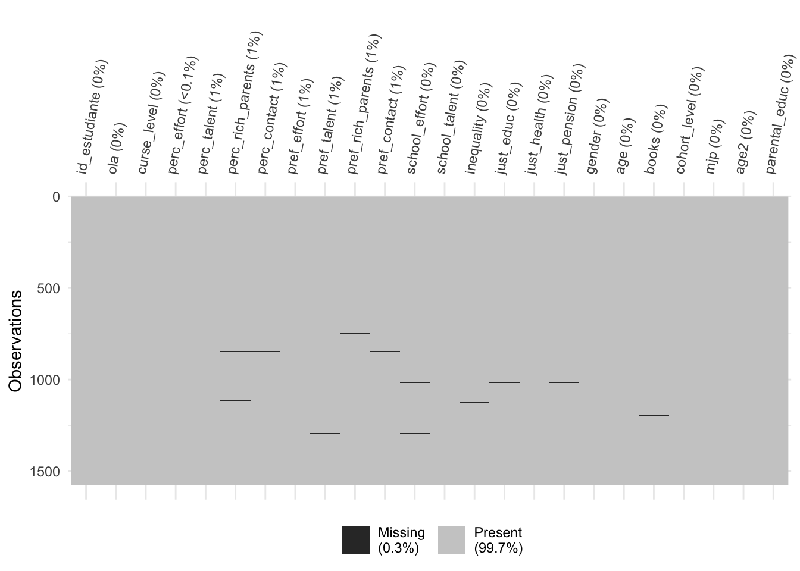

1 Presentation
This is the data preparation code for the paper “Changes in Beliefs about Meritocracy and Preferences for Market Justice in the Chilean School Context”. The prepared data is edumer_students_long.RData.
2 Libraries
3 Data
load(url("https://github.com/educacion-meritocracia/edumer-data/raw/main/output/data/edumer_students_long.RData"))
load(url("https://github.com/educacion-meritocracia/edumer-data/raw/main/output/data/db_proc_parents.RData"))
db_long <- edumer_students_long
rm(edumer_students_long)
glimpse(db_long)Rows: 1,576
Columns: 118
$ id_estudiante <dbl> 191617388, 191617388, 191617613, 191617613, 191647334…
$ ola <fct> 1, 2, 1, 2, 1, 2, 1, 2, 1, 1, 1, 1, 2, 1, 2, 1, 2, 1,…
$ d2_def <dbl> 2, 2, 2, 2, 2, 2, 2, 2, 2, 2, 2, 2, 2, 2, 2, 2, 2, 2,…
$ consentimiento <dbl> 1, 1, 1, 1, 1, 1, 1, 1, 1, 1, 1, 1, 1, 1, 1, 1, 1, 1,…
$ fecha <dttm> 2023-10-11 19:37:50, 2024-08-30 10:14:16, 2023-10-11…
$ d3_def <fct> 6a, NA, 1a, NA, 6a, NA, 6a, NA, 6a, 6a, 6a, 6a, NA, 6…
$ d3_def_w01_V <fct> NA, 6a, NA, 1a, NA, 6a, NA, 6a, NA, NA, NA, NA, 6a, N…
$ nivel_def <dbl> 1, NA, 3, NA, 1, NA, 1, NA, NA, NA, NA, 1, NA, 1, NA,…
$ nivel_estudiante <fct> 6to, 7mo, 1ro, 2do, 6to, 7mo, 6to, 7mo, 6to, 6to, 6to…
$ asignacion <dbl> 2, NA, 1, NA, 2, NA, 1, NA, 2, 2, 2, 2, NA, 1, NA, 2,…
$ tratamiento <dbl> NA, NA, 2, NA, NA, NA, 2, NA, NA, NA, NA, NA, NA, 2, …
$ control <dbl> 2, NA, NA, NA, 2, NA, NA, NA, 1, 2, 2, 2, NA, NA, NA,…
$ exp_t1_a <dbl> NA, 3, NA, 3, NA, 2, NA, 3, NA, NA, NA, NA, 2, NA, 3,…
$ exp_t1_b <dbl> NA, 2, NA, 2, NA, 3, NA, 2, NA, NA, NA, NA, 3, NA, 2,…
$ exp_t2_a <dbl> NA, 2, NA, 3, NA, 1, NA, 4, NA, NA, NA, NA, 3, NA, 4,…
$ exp_t2_b <dbl> NA, 3, NA, 2, NA, 4, NA, 1, NA, NA, NA, NA, 2, NA, 1,…
$ exp_t3_a <dbl> NA, 5, NA, 4, NA, 5, NA, 5, NA, NA, NA, NA, 5, NA, 5,…
$ exp_t3_b <dbl> NA, 0, NA, 1, NA, 0, NA, 0, NA, NA, NA, NA, 0, NA, 0,…
$ exp_t4_a <dbl> NA, 4, NA, 3, NA, 4, NA, 4, NA, NA, NA, NA, 3, NA, 3,…
$ exp_t4_b <dbl> NA, 0, NA, 3, NA, 0, NA, 1, NA, NA, NA, NA, 1, NA, 2,…
$ exp_t4_c <dbl> NA, 3, NA, 3, NA, 3, NA, 3, NA, NA, NA, NA, 3, NA, 3,…
$ exp_t4_d <dbl> NA, 3, NA, 1, NA, 3, NA, 2, NA, NA, NA, NA, 3, NA, 2,…
$ p1_1 <dbl> 3, 2, 3, 3, 4, 2, 3, 3, 4, 3, 3, 2, 2, 3, 3, 3, 4, 3,…
$ p1_2 <dbl> 3, 3, 3, 3, 4, 2, 4, 3, 4, 3, 3, 3, 3, 3, 3, 3, 3, 3,…
$ p1_3 <dbl> 2, 4, 4, 3, 2, 4, 4, 4, 3, 2, 4, 4, 3, 4, 4, 4, 3, 4,…
$ p1_4 <dbl> 3, 4, 4, 3, 3, 4, 4, 4, 2, 2, 4, 3, 2, 4, 3, 3, 3, 3,…
$ p1_5 <dbl> 4, 3, 4, 3, 3, 3, 4, 4, 3, 3, 4, 4, 4, 4, 4, 4, 4, 4,…
$ p1_6 <dbl> 3, 2, 3, 3, 2, 2, 2, 4, 2, 2, 3, 3, 3, 4, 3, 3, 4, 3,…
$ p1_7 <dbl> 2, 2, 4, 2, 2, 2, 2, 2, 3, 2, 2, 3, 4, 2, 2, 3, 2, 3,…
$ p1_8 <dbl> 3, 2, 4, 2, 2, 2, 3, 3, 2, 3, 2, 3, 3, 2, 2, 3, 2, 3,…
$ p1_9 <dbl> 4, 2, 2, 2, 4, 2, 4, 4, 4, 3, 3, 2, 1, 1, 1, 4, 1, 3,…
$ p1_10 <dbl> 4, 2, 3, 2, 4, 1, 1, 2, 2, 4, 2, 2, 2, 1, 2, 2, 1, 3,…
$ p2_1 <dbl> 4, 3, 3, 3, 4, 3, 3, 3, 3, 2, 4, 4, 4, 3, 3, 3, 4, 3,…
$ p2_2 <dbl> 4, 3, 3, 3, 4, 3, 3, 3, 4, 2, 4, 4, 3, 4, 4, 3, 3, 3,…
$ p2_3 <dbl> 2, 3, 3, 3, 3, 4, 3, 4, 2, 3, 2, 2, 3, 3, 3, 2, 3, 3,…
$ p3 <dbl> 10, 3, 5, 5, 5, 3, 5, 5, 6, 5, 10, 10, 5, 5, 7, 5, 5,…
$ p4 <dbl> 5.8, 5.7, 6.7, 6.0, 6.4, 6.5, 5.9, 6.4, 6.6, 6.2, 5.9…
$ p5 <dbl> 2, 2, 2, 2, 2, 3, 2, 2, 2, 1, 1, 2, 2, 2, 2, 2, 2, 2,…
$ p6 <dbl> NA, NA, NA, NA, NA, 5.6, NA, NA, NA, 6.0, 6.0, NA, NA…
$ p7 <dbl> 2, 2, 2, 2, 2, 2, 3, 3, 2, 2, 1, 1, 3, 2, 2, 2, 2, 2,…
$ p8_1 <dbl> 3, 4, 3, 4, 3, 4, 4, 4, 3, 3, 4, 4, 3, 4, 4, 4, 3, 4,…
$ p8_2 <dbl> 4, 4, 3, 4, 4, 4, 3, 4, 3, 3, 4, 3, 2, 4, 3, 4, 3, 4,…
$ p9_1 <dbl> 2, 3, 3, 4, 4, 3, 4, 4, 2, 3, 4, 4, 4, 4, 2, 4, 4, 3,…
$ p9_2 <dbl> 4, 3, 3, 3, 4, 3, 4, 4, 3, 2, 3, 4, 3, 4, 3, 4, 2, 3,…
$ p9_3 <dbl> 3, 2, 3, 3, 2, 1, 1, 2, 1, 1, 3, 4, 1, 2, 3, 3, 4, 3,…
$ p9_4 <dbl> 3, 2, 2, 2, 2, 1, 1, 1, 1, 1, 3, 4, 1, 2, 3, 2, 1, 1,…
$ p9_5 <dbl> 2, 2, 2, 2, 4, 1, 1, 1, 3, 1, 2, 4, 1, 1, 2, 3, 1, 2,…
$ p9_6 <dbl> 2, 2, 2, 2, 2, 1, 3, 3, 2, 2, 3, 4, 4, 3, 2, 3, 2, 2,…
$ p10_1 <dbl> 3, NA, 3, NA, 3, NA, 4, NA, 4, 2, 3, 3, NA, 4, NA, 4,…
$ p10_2 <dbl> 3, NA, 3, NA, 3, NA, 2, NA, 4, 3, 3, 4, NA, 2, NA, 2,…
$ p10_3 <dbl> 3, NA, 4, NA, 3, NA, 4, NA, 4, 3, 3, 4, NA, 3, NA, 4,…
$ p10_4 <dbl> 3, NA, 2, NA, 3, NA, 2, NA, 4, 3, 2, 1, NA, 4, NA, 2,…
$ p10_5 <dbl> 3, NA, 4, NA, 3, NA, 3, NA, 4, 2, 4, 1, NA, 3, NA, 4,…
$ p10_6 <dbl> 3, NA, 3, NA, 3, NA, 4, NA, 4, 3, 4, 1, NA, 3, NA, 4,…
$ p10_7 <dbl> 3, NA, 3, NA, 4, NA, 4, NA, 4, 3, 4, 3, NA, 4, NA, 4,…
$ p10_8 <dbl> 3, NA, 3, NA, 4, NA, 3, NA, 3, 3, 4, 3, NA, 4, NA, 4,…
$ p11_1 <dbl> 3, NA, 3, NA, 4, NA, 4, NA, 4, 2, 3, 4, NA, 3, NA, 3,…
$ p11_2 <dbl> 3, NA, 3, NA, 4, NA, 4, NA, 4, 3, 4, 4, NA, 4, NA, 4,…
$ p11_3 <dbl> 3, NA, 4, NA, 4, NA, 4, NA, 3, 3, 4, 4, NA, 4, NA, 4,…
$ p12_1 <dbl> 2, NA, 2, NA, 2, NA, 2, NA, 2, 2, 1, 2, NA, 1, NA, 2,…
$ p12_2 <dbl> 2, NA, 2, NA, 2, NA, 2, NA, 2, 2, 2, 2, NA, 1, NA, 2,…
$ p12_3 <dbl> 2, NA, 2, NA, 2, NA, 2, NA, 2, 2, 2, 1, NA, 2, NA, 2,…
$ p13_1 <dbl> 1, 1, 4, 1, 2, 1, 1, 1, 1, 3, 3, 4, 2, 1, 2, 4, 2, 1,…
$ p13_2 <dbl> 1, 1, 4, 1, 2, 1, 2, 1, 4, 3, 3, 4, 1, 1, 1, 5, 1, 1,…
$ p13_3 <dbl> 1, 1, 3, 1, 1, 1, 1, 1, 1, 4, 1, 5, 1, 1, 1, 1, 1, 1,…
$ p13_4 <dbl> 1, 2, 3, 1, 1, 2, 3, 1, 1, 2, 3, 3, 2, 1, 1, 2, 1, 1,…
$ p13_5 <dbl> 1, 1, 1, 1, 1, 1, 1, 1, 1, 2, 2, 4, 1, 1, 1, 1, 2, 1,…
$ p13_6 <dbl> 1, 1, 3, 1, 1, 1, 2, 1, 1, 4, 5, 3, 1, 1, 1, 4, 1, 1,…
$ p13_7 <dbl> NA, 1, NA, 1, NA, 1, NA, 1, NA, NA, NA, NA, 2, NA, 1,…
$ p13_8 <dbl> NA, 2, NA, 1, NA, 1, NA, 2, NA, NA, NA, NA, 1, NA, 1,…
$ p13_9 <dbl> NA, 2, NA, 2, NA, 2, NA, 1, NA, NA, NA, NA, 2, NA, 3,…
$ p13_10 <dbl> NA, 3, NA, 2, NA, 2, NA, 2, NA, NA, NA, NA, 1, NA, 3,…
$ p13_11 <dbl> NA, 2, NA, 2, NA, 2, NA, 2, NA, NA, NA, NA, 2, NA, 3,…
$ p13_12 <dbl> NA, 2, NA, 2, NA, 2, NA, 2, NA, NA, NA, NA, 1, NA, 3,…
$ p14_otra <chr> "", NA, "", NA, "", NA, "", NA, "", "", "", "", NA, "…
$ p14 <dbl> 1, NA, 2, NA, 2, NA, 2, NA, 2, 1, 6, 2, NA, 2, NA, 2,…
$ p15 <dbl> 4, NA, 2, NA, 4, NA, 1, NA, 3, 2, 4, 1, NA, 4, NA, 4,…
$ p16_o1_orig <dbl> 1, NA, 6, NA, 1, NA, 6, NA, 6, 6, 2, 1, NA, 6, NA, 6,…
$ p16_o1 <dbl> 1, NA, 1, NA, 1, NA, 1, NA, 1, 1, 1, 1, NA, 1, NA, 1,…
$ p16_o2_orig <dbl> 2, NA, NA, NA, 4, NA, NA, NA, NA, NA, 4, 4, NA, NA, N…
$ p16_o2 <dbl> 1, NA, 0, NA, 0, NA, 0, NA, 0, 0, 1, 0, NA, 0, NA, 0,…
$ p16_o3_orig <dbl> 5, NA, NA, NA, 5, NA, NA, NA, NA, NA, 5, NA, NA, NA, …
$ p16_o3 <dbl> 0, NA, 0, NA, 0, NA, 0, NA, 0, 0, 0, 0, NA, 0, NA, 0,…
$ p16_o4_orig <dbl> 6, NA, NA, NA, 6, NA, NA, NA, NA, NA, 6, NA, NA, NA, …
$ p16_o4 <dbl> 0, NA, 0, NA, 1, NA, 0, NA, 0, 0, 1, 1, NA, 0, NA, 0,…
$ p16_o5_orig <dbl> NA, NA, NA, NA, NA, NA, NA, NA, NA, NA, NA, NA, NA, N…
$ p16_o5 <dbl> 1, NA, 0, NA, 1, NA, 0, NA, 0, 0, 1, 0, NA, 0, NA, 0,…
$ p16_o6_orig <dbl> NA, NA, NA, NA, NA, NA, NA, NA, NA, NA, NA, NA, NA, N…
$ p16_o6 <dbl> 1, NA, 1, NA, 1, NA, 1, NA, 1, 1, 1, 0, NA, 1, NA, 1,…
$ p16_o88 <dbl> 0, NA, 0, NA, 0, NA, 0, NA, 0, 0, 0, 0, NA, 0, NA, 0,…
$ p16_o99 <dbl> 0, NA, 0, NA, 0, NA, 0, NA, 0, 0, 0, 0, NA, 0, NA, 0,…
$ s_115_6 <chr> "viajes", NA, "sobre como nos fue en el dia", NA, "co…
$ p17_1 <dbl> 1, 3, 3, 3, 2, 3, 3, 3, 3, 3, 3, 4, 3, 1, 1, 3, 2, 4,…
$ p17_2 <dbl> 1, 2, 3, 3, 4, 2, 4, 2, 3, 3, 3, 4, 4, 2, 2, 4, 1, 3,…
$ p18_1 <dbl> 1, NA, 2, NA, 3, NA, 4, NA, 3, 2, 2, 4, NA, 4, NA, 2,…
$ p18_2 <dbl> 3, NA, 3, NA, 3, NA, 3, NA, 4, 3, 3, 1, NA, 3, NA, 4,…
$ p18_3 <dbl> 1, NA, 3, NA, 2, NA, 1, NA, 2, 2, 2, 2, NA, 1, NA, 1,…
$ p18_4 <dbl> 3, NA, 3, NA, 2, NA, 4, NA, 3, 2, 4, 1, NA, 3, NA, 4,…
$ p18_5 <dbl> 3, NA, 3, NA, 2, NA, 2, NA, 3, 3, 4, 1, NA, 3, NA, 4,…
$ p18_6 <dbl> 3, NA, 3, NA, 3, NA, 2, NA, 3, 3, 4, 1, NA, 3, NA, 3,…
$ p19 <dbl> 3, 3, 3, 3, 4, 3, 3, 3, 3, 3, 4, 4, 4, 4, 2, 4, 4, 4,…
$ p20 <fct> H, H, M, M, H, O, M, M, H, O, M, H, H, H, H, M, M, H,…
$ p21_ano <dbl> 2011, 2011, 2007, 2007, 2011, 2011, 2012, 2012, 2011,…
$ p21_mes <dbl> 10, 10, 10, 10, 8, 8, 2, 2, 9, 10, 10, 7, 7, 8, 8, 10…
$ p22_1 <dbl> 1, NA, 1, NA, 1, NA, 1, NA, 1, 1, 1, 1, NA, 1, NA, 1,…
$ p22_2 <dbl> 1, NA, 1, NA, 1, NA, 1, NA, 1, 1, 1, 1, NA, 1, NA, 1,…
$ p22_3 <dbl> 1, NA, 1, NA, 1, NA, 1, NA, 1, 1, 1, 1, NA, 1, NA, 1,…
$ p22_otro_1 <dbl> NA, NA, NA, NA, NA, NA, NA, NA, NA, NA, NA, NA, NA, N…
$ p22_otro_2 <dbl> NA, NA, NA, NA, NA, NA, NA, NA, NA, NA, NA, NA, NA, N…
$ p22_otro_3 <dbl> NA, NA, NA, NA, NA, NA, NA, NA, NA, NA, NA, NA, NA, N…
$ p23 <dbl> 4, NA, 7, NA, 5, NA, 3, NA, 4, 7, 4, 4, NA, 4, NA, 4,…
$ p24 <dbl> 5, NA, 1, NA, 5, NA, 5, NA, 5, 1, 1, 5, NA, 5, NA, 5,…
$ p25 <dbl> 1, 1, 2, 1, 3, 3, 3, 3, 3, 1, 3, 1, 3, 3, 3, 3, 3, 3,…
$ p26 <dbl> 3, 3, 99, 3, 1, 2, 2, 5, 5, 4, 5, 4, 4, 3, 99, 99, 3,…
$ p27 <dbl> 3, 3, 5, 4, 2, 88, 3, 5, 5, 5, 5, 4, 4, 3, 99, 99, 88…
$ p28 <dbl> 8, NA, 1, NA, 6, NA, 5, NA, 2, 1, 1, 6, NA, 1, NA, 1,…
$ p29 <dbl> 1, NA, 3, NA, 3, NA, 1, NA, 5, 1, 4, 1, NA, 1, NA, 1,…
$ p30 <dbl> 2, 1, 2, 1, 1, 3, 3, 3, 2, 3, 3, 5, 5, 3, 3, 1, 1, 1,…4 Processing
4.1 Select
db_long <- db_long %>%
select(id_estudiante,
ola,
consent = consentimiento,
curse_level = nivel_estudiante,
perc_effort = p1_1,
perc_talent = p1_2,
perc_rich_parents = p1_3,
perc_contact = p1_4,
pref_effort = p1_5,
pref_talent = p1_6,
pref_rich_parents = p1_7,
pref_contact = p1_8,
school_effort = p2_1,
school_talent = p2_2,
inequality = p9_1,
just_educ = p9_3,
just_health = p9_4,
just_pension = p9_5,
gender = p20,
age = p21_ano,
educ_m = p26,
educ_p = p27,
books = p30)5 Filter
db_long <- db_long %>% filter(consent == 1) %>% select(-consent)6 Recode and transform
# level
frq(db_long$curse_level)x <categorical>
# total N=1576 valid N=1576 mean=2.68 sd=1.04
Value | N | Raw % | Valid % | Cum. %
--------------------------------------
1ro | 190 | 12.06 | 12.06 | 12.06
2do | 609 | 38.64 | 38.64 | 50.70
6to | 294 | 18.65 | 18.65 | 69.35
7mo | 483 | 30.65 | 30.65 | 100.00
<NA> | 0 | 0.00 | <NA> | <NA>db_long <- db_long %>%
mutate(
cohort_level = if_else(curse_level %in% c("6to", "7mo"), "Básica", "Media"),
cohort_level = factor(cohort_level,
labels = c("Básica", "Media")),
curse_level = factor(curse_level,
levels = c("6to", "7mo", "1ro", "2do"))
)
# merit-scale society
frq(db_long$perc_effort)En Chile, las personas son recompensadas por sus esfuerzos (x) <numeric>
# total N=1576 valid N=1576 mean=2.78 sd=2.29
Value | N | Raw % | Valid % | Cum. %
--------------------------------------
1 | 116 | 7.36 | 7.36 | 7.36
2 | 436 | 27.66 | 27.66 | 35.03
3 | 783 | 49.68 | 49.68 | 84.71
4 | 240 | 15.23 | 15.23 | 99.94
88 | 1 | 0.06 | 0.06 | 100.00
<NA> | 0 | 0.00 | <NA> | <NA>frq(db_long$perc_talent)En Chile, las personas son recompensadas por su inteligencia y habilidad (x) <numeric>
# total N=1576 valid N=1576 mean=3.39 sd=6.99
Value | N | Raw % | Valid % | Cum. %
--------------------------------------
1 | 87 | 5.52 | 5.52 | 5.52
2 | 354 | 22.46 | 22.46 | 27.98
3 | 859 | 54.51 | 54.51 | 82.49
4 | 266 | 16.88 | 16.88 | 99.37
88 | 8 | 0.51 | 0.51 | 99.87
99 | 2 | 0.13 | 0.13 | 100.00
<NA> | 0 | 0.00 | <NA> | <NA>frq(db_long$perc_rich_parents)En Chile, a quienes tienen padres ricos les va mucho mejor en la vida (x) <numeric>
# total N=1576 valid N=1576 mean=3.95 sd=9.11
Value | N | Raw % | Valid % | Cum. %
--------------------------------------
1 | 126 | 7.99 | 7.99 | 7.99
2 | 333 | 21.13 | 21.13 | 29.12
3 | 506 | 32.11 | 32.11 | 61.23
4 | 594 | 37.69 | 37.69 | 98.92
88 | 13 | 0.82 | 0.82 | 99.75
99 | 4 | 0.25 | 0.25 | 100.00
<NA> | 0 | 0.00 | <NA> | <NA>frq(db_long$perc_contact)En Chile, quienes tienen buenos contactos les va mejor en la vida (x) <numeric>
# total N=1576 valid N=1576 mean=3.93 sd=8.80
Value | N | Raw % | Valid % | Cum. %
--------------------------------------
1 | 76 | 4.82 | 4.82 | 4.82
2 | 288 | 18.27 | 18.27 | 23.10
3 | 637 | 40.42 | 40.42 | 63.52
4 | 560 | 35.53 | 35.53 | 99.05
88 | 8 | 0.51 | 0.51 | 99.56
99 | 7 | 0.44 | 0.44 | 100.00
<NA> | 0 | 0.00 | <NA> | <NA>frq(db_long$pref_effort)Quienes más se esfuerzan deberían obtener mayores recompensas que quienes se esfuerzan menos (x) <numeric>
# total N=1576 valid N=1576 mean=3.92 sd=6.95
Value | N | Raw % | Valid % | Cum. %
--------------------------------------
1 | 67 | 4.25 | 4.25 | 4.25
2 | 128 | 8.12 | 8.12 | 12.37
3 | 529 | 33.57 | 33.57 | 45.94
4 | 842 | 53.43 | 53.43 | 99.37
88 | 8 | 0.51 | 0.51 | 99.87
99 | 2 | 0.13 | 0.13 | 100.00
<NA> | 0 | 0.00 | <NA> | <NA>frq(db_long$pref_talent)Quienes poseen más talento deberían obtener mayores recompensas que quienes poseen menos talento (x) <numeric>
# total N=1576 valid N=1576 mean=3.54 sd=9.24
Value | N | Raw % | Valid % | Cum. %
--------------------------------------
1 | 103 | 6.54 | 6.54 | 6.54
2 | 635 | 40.29 | 40.29 | 46.83
3 | 588 | 37.31 | 37.31 | 84.14
4 | 234 | 14.85 | 14.85 | 98.98
88 | 7 | 0.44 | 0.44 | 99.43
99 | 9 | 0.57 | 0.57 | 100.00
<NA> | 0 | 0.00 | <NA> | <NA>frq(db_long$pref_rich_parents)Está bien que quienes tienen padres ricos les vaya bien en la vida (x) <numeric>
# total N=1576 valid N=1576 mean=3.16 sd=7.59
Value | N | Raw % | Valid % | Cum. %
--------------------------------------
1 | 156 | 9.90 | 9.90 | 9.90
2 | 568 | 36.04 | 36.04 | 45.94
3 | 691 | 43.85 | 43.85 | 89.78
4 | 150 | 9.52 | 9.52 | 99.30
88 | 6 | 0.38 | 0.38 | 99.68
99 | 5 | 0.32 | 0.32 | 100.00
<NA> | 0 | 0.00 | <NA> | <NA>frq(db_long$pref_contact)Está bien que quienes tienen buenos contactos les vaya bien en la vida (x) <numeric>
# total N=1576 valid N=1576 mean=3.23 sd=7.36
Value | N | Raw % | Valid % | Cum. %
--------------------------------------
1 | 129 | 8.19 | 8.19 | 8.19
2 | 499 | 31.66 | 31.66 | 39.85
3 | 727 | 46.13 | 46.13 | 85.98
4 | 211 | 13.39 | 13.39 | 99.37
88 | 4 | 0.25 | 0.25 | 99.62
99 | 6 | 0.38 | 0.38 | 100.00
<NA> | 0 | 0.00 | <NA> | <NA>labels1 <- c("Muy en desacuerdo" = 1,
"En desacuerdo" = 2,
"De acuerdo" = 3,
"Muy de acuerdo" = 4,
"No sabe" = 88,
"No responde" = 99)
db_long <- db_long %>%
mutate_at(.vars = (4:11),.funs = ~ sjlabelled::set_labels(., labels = labels1))
db_long <- db_long %>%
mutate_at(.vars = (4:11),.funs = ~ set_na(., na = c(88,99)))
# merit school
frq(db_long$school_effort)En esta escuela, quienes se esfuerzan obtienen buenas notas (x) <numeric>
# total N=1576 valid N=1576 mean=3.52 sd=5.74
Value | N | Raw % | Valid % | Cum. %
--------------------------------------
1 | 68 | 4.31 | 4.31 | 4.31
2 | 161 | 10.22 | 10.22 | 14.53
3 | 775 | 49.18 | 49.18 | 63.71
4 | 566 | 35.91 | 35.91 | 99.62
88 | 2 | 0.13 | 0.13 | 99.75
99 | 4 | 0.25 | 0.25 | 100.00
<NA> | 0 | 0.00 | <NA> | <NA>frq(db_long$school_talent)En esta escuela, quienes son inteligentes obtienen buenas notas (x) <numeric>
# total N=1576 valid N=1576 mean=3.40 sd=4.75
Value | N | Raw % | Valid % | Cum. %
--------------------------------------
1 | 40 | 2.54 | 2.54 | 2.54
2 | 172 | 10.91 | 10.91 | 13.45
3 | 848 | 53.81 | 53.81 | 67.26
4 | 512 | 32.49 | 32.49 | 99.75
88 | 1 | 0.06 | 0.06 | 99.81
99 | 3 | 0.19 | 0.19 | 100.00
<NA> | 0 | 0.00 | <NA> | <NA>db_long <- db_long %>%
mutate_at(.vars = (12:13),.funs = ~ sjlabelled::set_labels(., labels = labels1))
db_long <- db_long %>%
mutate_at(.vars = (12:13),.funs = ~ set_na(., na = c(88,99)))
# percep inequality
frq(db_long$inequality)Las diferencias económicas entre ricos y pobres en Chile son demasiado grandes (x) <numeric>
# total N=1576 valid N=1576 mean=3.44 sd=4.10
Value | N | Raw % | Valid % | Cum. %
--------------------------------------
1 | 63 | 4.00 | 4.00 | 4.00
2 | 146 | 9.26 | 9.26 | 13.26
3 | 673 | 42.70 | 42.70 | 55.96
4 | 691 | 43.85 | 43.85 | 99.81
88 | 1 | 0.06 | 0.06 | 99.87
99 | 2 | 0.13 | 0.13 | 100.00
<NA> | 0 | 0.00 | <NA> | <NA>db_long <- db_long %>%
mutate(inequality = sjlabelled::set_labels(inequality, labels = labels1),
inequality = set_na(inequality, na = c(88,99)))
# market justice preference
frq(db_long$just_educ)Está bien que aquellos que puedan pagar más tengan mejor educación (x) <numeric>
# total N=1576 valid N=1576 mean=2.63 sd=5.59
Value | N | Raw % | Valid % | Cum. %
--------------------------------------
1 | 322 | 20.43 | 20.43 | 20.43
2 | 630 | 39.97 | 39.97 | 60.41
3 | 459 | 29.12 | 29.12 | 89.53
4 | 159 | 10.09 | 10.09 | 99.62
88 | 4 | 0.25 | 0.25 | 99.87
99 | 2 | 0.13 | 0.13 | 100.00
<NA> | 0 | 0.00 | <NA> | <NA>frq(db_long$just_health)Está bien que aquellos que puedan pagar más tengan mejor acceso a salud (x) <numeric>
# total N=1576 valid N=1576 mean=2.44 sd=6.22
Value | N | Raw % | Valid % | Cum. %
--------------------------------------
1 | 545 | 34.58 | 34.58 | 34.58
2 | 565 | 35.85 | 35.85 | 70.43
3 | 320 | 20.30 | 20.30 | 90.74
4 | 139 | 8.82 | 8.82 | 99.56
88 | 3 | 0.19 | 0.19 | 99.75
99 | 4 | 0.25 | 0.25 | 100.00
<NA> | 0 | 0.00 | <NA> | <NA>frq(db_long$just_pension)Está bien que en Chile las personas con mayores ingresos puedan tener mejores pensiones que las personas de ingresos más bajos. (x) <numeric>
# total N=1576 valid N=1576 mean=2.42 sd=5.60
Value | N | Raw % | Valid % | Cum. %
--------------------------------------
1 | 438 | 27.79 | 27.79 | 27.79
2 | 664 | 42.13 | 42.13 | 69.92
3 | 372 | 23.60 | 23.60 | 93.53
4 | 96 | 6.09 | 6.09 | 99.62
88 | 4 | 0.25 | 0.25 | 99.87
99 | 2 | 0.13 | 0.13 | 100.00
<NA> | 0 | 0.00 | <NA> | <NA>db_long <- db_long %>%
mutate_at(.vars = (15:17),.funs = ~ sjlabelled::set_labels(., labels = labels1))
db_long <- db_long %>%
mutate_at(.vars = (15:17),.funs = ~ set_na(., na = c(88,99)))
db_long$mjp <- rowMeans(x = db_long[15:17], na.rm = T)
db_long$mjp <- if_else(is.nan(db_long$mjp), NA, db_long$mjp)
summary(db_long$mjp) Min. 1st Qu. Median Mean 3rd Qu. Max. NA's
1.000 1.667 2.000 2.135 2.667 4.000 2 # gender
frq(db_long$gender)x <categorical>
# total N=1576 valid N=1576 mean=1.54 sd=0.58
Value | N | Raw % | Valid % | Cum. %
--------------------------------------
H | 789 | 50.06 | 50.06 | 50.06
M | 720 | 45.69 | 45.69 | 95.75
O | 67 | 4.25 | 4.25 | 100.00
<NA> | 0 | 0.00 | <NA> | <NA>db_long$gender <- car::recode(db_long$gender,
recodes = c("'H'= 'Hombre'; 'M' = 'Mujer'; 'O' = 'Otro'"),
as.factor = T)
# age
frq(db_long$age)x <numeric>
# total N=1576 valid N=1576 mean=2009.68 sd=1.62
Value | N | Raw % | Valid % | Cum. %
--------------------------------------
1999 | 2 | 0.13 | 0.13 | 0.13
2006 | 12 | 0.76 | 0.76 | 0.89
2007 | 36 | 2.28 | 2.28 | 3.17
2008 | 499 | 31.66 | 31.66 | 34.84
2009 | 255 | 16.18 | 16.18 | 51.02
2010 | 40 | 2.54 | 2.54 | 53.55
2011 | 540 | 34.26 | 34.26 | 87.82
2012 | 192 | 12.18 | 12.18 | 100.00
<NA> | 0 | 0.00 | <NA> | <NA>db_long$age <- 2024 - db_long$age
db_long$age2 <- db_long$age^2
# ses
frq(db_long$books)Aproximadamente ¿cuántos libros hay en tu hogar? (x) <numeric>
# total N=1576 valid N=1576 mean=2.60 sd=5.11
Value | N | Raw % | Valid % | Cum. %
--------------------------------------
1 | 509 | 32.30 | 32.30 | 32.30
2 | 448 | 28.43 | 28.43 | 60.72
3 | 380 | 24.11 | 24.11 | 84.84
4 | 113 | 7.17 | 7.17 | 92.01
5 | 71 | 4.51 | 4.51 | 96.51
6 | 50 | 3.17 | 3.17 | 99.68
88 | 4 | 0.25 | 0.25 | 99.94
99 | 1 | 0.06 | 0.06 | 100.00
<NA> | 0 | 0.00 | <NA> | <NA>db_long <- db_long %>%
mutate(books = case_when(books <= 2 ~ "Menos de 25",
books >= 3 & books <= 6 ~ "Más de 25",
TRUE ~ NA_character_),
books = factor(books, levels = c("Menos de 25", "Más de 25")))
db_long <- left_join(
db_long,
db_parents[,c("id_estudiante_apoderado", "id_apoderado", "p12_1_apoderado")],
by = c("id_estudiante" = "id_estudiante_apoderado")
)
frq(db_long$p12_1_apoderado). ¿Cuál es el último curso o nivel de estudios que completó? (x) <numeric>
# total N=1576 valid N=319 mean=6.41 sd=7.70
Value | Label | N | Raw % | Valid % | Cum. %
---------------------------------------------------------------------------------------------------------------------------------------------------------------
1 | Sin estudios formales | 5 | 0.32 | 1.57 | 1.57
2 | Básica incompleta / primaria o preparatoria incompleta | 16 | 1.02 | 5.02 | 6.58
3 | Básica completa / primaria o preparatoria completa | 30 | 1.90 | 9.40 | 15.99
4 | Media científico humanista o media técnico profesional incompleta / humanidades incompleta | 35 | 2.22 | 10.97 | 26.96
5 | Media científico humanista o media técnico profesional completa / humanidades completa | 77 | 4.89 | 24.14 | 51.10
6 | Instituto técnico (CFT) o instituto profesional incompleto (carreras 1 a 3 años) | 35 | 2.22 | 10.97 | 62.07
7 | Instituto técnico (CFT) o instituto profesional completo (carreras 1 a 3 años) / hasta suboficial de FFAA/Carabineros | 40 | 2.54 | 12.54 | 74.61
8 | Universitaria incompleta (carreras 4 o más años) | 23 | 1.46 | 7.21 | 81.82
9 | Universitaria completa (carreras 4 años o más) / Oficial de FF/Carabineros | 40 | 2.54 | 12.54 | 94.36
10 | Postgrado (postítulo, master, magíster, doctor) | 16 | 1.02 | 5.02 | 99.37
88 | No sabe | 0 | 0.00 | 0.00 | 99.37
99 | No responde | 2 | 0.13 | 0.63 | 100.00
<NA> | <NA> | 1257 | 79.76 | <NA> | <NA>frq(db_long$educ_m)¿Cuál es el último curso o nivel de estudios que completó tu madre ? (x) <numeric>
# total N=1576 valid N=1576 mean=27.23 sd=39.59
Value | N | Raw % | Valid % | Cum. %
--------------------------------------
1 | 48 | 3.05 | 3.05 | 3.05
2 | 73 | 4.63 | 4.63 | 7.68
3 | 444 | 28.17 | 28.17 | 35.85
4 | 245 | 15.55 | 15.55 | 51.40
5 | 308 | 19.54 | 19.54 | 70.94
6 | 45 | 2.86 | 2.86 | 73.79
88 | 208 | 13.20 | 13.20 | 86.99
99 | 205 | 13.01 | 13.01 | 100.00
<NA> | 0 | 0.00 | <NA> | <NA>frq(db_long$educ_p)¿Cuál es el último curso o nivel de estudios que completó tu padre ? (x) <numeric>
# total N=1576 valid N=1576 mean=34.27 sd=42.46
Value | N | Raw % | Valid % | Cum. %
--------------------------------------
1 | 40 | 2.54 | 2.54 | 2.54
2 | 74 | 4.70 | 4.70 | 7.23
3 | 378 | 23.98 | 23.98 | 31.22
4 | 185 | 11.74 | 11.74 | 42.96
5 | 316 | 20.05 | 20.05 | 63.01
6 | 44 | 2.79 | 2.79 | 65.80
88 | 296 | 18.78 | 18.78 | 84.58
99 | 243 | 15.42 | 15.42 | 100.00
<NA> | 0 | 0.00 | <NA> | <NA>db_long <- db_long %>%
mutate(
across(
.cols = c(educ_m, educ_p, p12_1_apoderado),
.fns = ~ set_na(., na = c(88,99))
)
)
db_long <- db_long %>%
rowwise() %>%
mutate(
aux1 = case_when(
!is.na(educ_p) & !is.na(educ_m) ~ max(educ_p, educ_m),
is.na(educ_p) & !is.na(educ_m) ~ educ_m,
!is.na(educ_p) & is.na(educ_m) ~ educ_p,
TRUE ~ NA_real_
)
) %>%
ungroup()
frq(db_long$aux1)x <numeric>
# total N=1576 valid N=1238 mean=4.02 sd=1.11
Value | N | Raw % | Valid % | Cum. %
--------------------------------------
1 | 25 | 1.59 | 2.02 | 2.02
2 | 48 | 3.05 | 3.88 | 5.90
3 | 385 | 24.43 | 31.10 | 37.00
4 | 268 | 17.01 | 21.65 | 58.64
5 | 442 | 28.05 | 35.70 | 94.35
6 | 70 | 4.44 | 5.65 | 100.00
<NA> | 338 | 21.45 | <NA> | <NA>frq(db_long$p12_1_apoderado). ¿Cuál es el último curso o nivel de estudios que completó? (x) <numeric>
# total N=1576 valid N=317 mean=5.82 sd=2.25
Value | Label | N | Raw % | Valid % | Cum. %
---------------------------------------------------------------------------------------------------------------------------------------------------------------
1 | Sin estudios formales | 5 | 0.32 | 1.58 | 1.58
2 | Básica incompleta / primaria o preparatoria incompleta | 16 | 1.02 | 5.05 | 6.62
3 | Básica completa / primaria o preparatoria completa | 30 | 1.90 | 9.46 | 16.09
4 | Media científico humanista o media técnico profesional incompleta / humanidades incompleta | 35 | 2.22 | 11.04 | 27.13
5 | Media científico humanista o media técnico profesional completa / humanidades completa | 77 | 4.89 | 24.29 | 51.42
6 | Instituto técnico (CFT) o instituto profesional incompleto (carreras 1 a 3 años) | 35 | 2.22 | 11.04 | 62.46
7 | Instituto técnico (CFT) o instituto profesional completo (carreras 1 a 3 años) / hasta suboficial de FFAA/Carabineros | 40 | 2.54 | 12.62 | 75.08
8 | Universitaria incompleta (carreras 4 o más años) | 23 | 1.46 | 7.26 | 82.33
9 | Universitaria completa (carreras 4 años o más) / Oficial de FF/Carabineros | 40 | 2.54 | 12.62 | 94.95
10 | Postgrado (postítulo, master, magíster, doctor) | 16 | 1.02 | 5.05 | 100.00
<NA> | <NA> | 1259 | 79.89 | <NA> | <NA>db_long <- db_long %>%
group_by(id_estudiante) %>%
rowwise() %>%
mutate(parental_educ = if_else(is.na(p12_1_apoderado), aux1, p12_1_apoderado)) %>%
ungroup()
frq(db_long$parental_educ)x <numeric>
# total N=1576 valid N=1305 mean=4.45 sd=1.66
Value | N | Raw % | Valid % | Cum. %
--------------------------------------
1 | 22 | 1.40 | 1.69 | 1.69
2 | 55 | 3.49 | 4.21 | 5.90
3 | 344 | 21.83 | 26.36 | 32.26
4 | 255 | 16.18 | 19.54 | 51.80
5 | 420 | 26.65 | 32.18 | 83.98
6 | 90 | 5.71 | 6.90 | 90.88
7 | 40 | 2.54 | 3.07 | 93.95
8 | 23 | 1.46 | 1.76 | 95.71
9 | 40 | 2.54 | 3.07 | 98.77
10 | 16 | 1.02 | 1.23 | 100.00
<NA> | 271 | 17.20 | <NA> | <NA>db_long <- db_long %>%
rowwise() %>%
mutate(parental_educ = case_when(parental_educ == 1 ~ "Primaria o menos",
parental_educ == 2 ~ "Primaria o menos",
parental_educ == 3 ~ "Primaria o menos",
parental_educ == 4 ~ "Secundaria",
parental_educ == 5 ~ "Secundaria",
parental_educ == 6 ~ "Superior técnica",
parental_educ == 7 ~ "Superior técnica",
parental_educ == 8 ~ "Universitaria o Posgrado",
parental_educ == 9 ~ "Universitaria o Posgrado",
parental_educ == 10 ~ "Universitaria o Posgrado",
is.na(parental_educ) ~ "Valor perdido")) %>%
ungroup()
db_long$parental_educ <- factor(db_long$parental_educ, levels = c("Primaria o menos", "Secundaria", "Superior técnica", "Universitaria o Posgrado", "Valor perdido"))db_long$curse_level <- set_label(db_long$curse_level,label = "Curso estudiante")
db_long$cohort_level <- set_label(db_long$cohort_level,label = "Cohorte estudiante")
db_long$gender <- set_label(db_long$gender,label = "Género")
db_long$age <- set_label(db_long$age,label = "Edad")
db_long$age2 <- set_label(db_long$age2,label = "Edad^2")
db_long$books <- set_label(db_long$books,label = "Libros en el hogar")
db_long$mjp <- set_label(db_long$mjp,label = "Justicia de mercado")
db_long$parental_educ <- set_label(db_long$parental_educ,label = "Nivel educacional parental")
db_proc <- db_long %>%
select(-c(educ_m, educ_p, aux1, p12_1_apoderado, id_apoderado))7 Missings
id_estudiante ola curse_level perc_effort
0 0 0 1
perc_talent perc_rich_parents perc_contact pref_effort
10 17 15 10
pref_talent pref_rich_parents pref_contact school_effort
16 11 10 6
school_talent inequality just_educ just_health
4 3 6 7
just_pension gender age books
6 0 0 5
cohort_level mjp age2 parental_educ
0 2 0 0 n_miss(db_proc)[1] 129prop_miss(db_proc)*100[1] 0.3410533miss_var_summary(db_proc)# A tibble: 24 × 3
variable n_miss pct_miss
<chr> <int> <num>
1 perc_rich_parents 17 1.08
2 pref_talent 16 1.02
3 perc_contact 15 0.952
4 pref_rich_parents 11 0.698
5 perc_talent 10 0.635
6 pref_effort 10 0.635
7 pref_contact 10 0.635
8 just_health 7 0.444
9 school_effort 6 0.381
10 just_educ 6 0.381
# ℹ 14 more rowsvis_miss(db_proc) + theme(axis.text.x = element_text(angle=80))
Data Frame Summary
db_proc
Dimensions: 1576 x 24Duplicates: 0
| No | Variable | Label | Stats / Values | Freqs (% of Valid) | Graph | Valid | Missing | ||||||||||||||||||||||||||||||||||||||||||||||||||||
|---|---|---|---|---|---|---|---|---|---|---|---|---|---|---|---|---|---|---|---|---|---|---|---|---|---|---|---|---|---|---|---|---|---|---|---|---|---|---|---|---|---|---|---|---|---|---|---|---|---|---|---|---|---|---|---|---|---|---|---|
| 1 | id_estudiante [numeric] | Identificador único estudiante |
|
937 distinct values |  |
1576 (100.0%) | 0 (0.0%) | ||||||||||||||||||||||||||||||||||||||||||||||||||||
| 2 | ola [factor] | Ola |
|
|
 |
1576 (100.0%) | 0 (0.0%) | ||||||||||||||||||||||||||||||||||||||||||||||||||||
| 3 | curse_level [factor] | Curso estudiante |
|
|
 |
1576 (100.0%) | 0 (0.0%) | ||||||||||||||||||||||||||||||||||||||||||||||||||||
| 4 | perc_effort [numeric] | En Chile, las personas son recompensadas por sus esfuerzos |
|
|
 |
1575 (99.9%) | 1 (0.1%) | ||||||||||||||||||||||||||||||||||||||||||||||||||||
| 5 | perc_talent [numeric] | En Chile, las personas son recompensadas por su inteligencia y habilidad |
|
|
 |
1566 (99.4%) | 10 (0.6%) | ||||||||||||||||||||||||||||||||||||||||||||||||||||
| 6 | perc_rich_parents [numeric] | En Chile, a quienes tienen padres ricos les va mucho mejor en la vida |
|
|
 |
1559 (98.9%) | 17 (1.1%) | ||||||||||||||||||||||||||||||||||||||||||||||||||||
| 7 | perc_contact [numeric] | En Chile, quienes tienen buenos contactos les va mejor en la vida |
|
|
 |
1561 (99.0%) | 15 (1.0%) | ||||||||||||||||||||||||||||||||||||||||||||||||||||
| 8 | pref_effort [numeric] | Quienes más se esfuerzan deberían obtener mayores recompensas que quienes se esfuerzan menos |
|
|
 |
1566 (99.4%) | 10 (0.6%) | ||||||||||||||||||||||||||||||||||||||||||||||||||||
| 9 | pref_talent [numeric] | Quienes poseen más talento deberían obtener mayores recompensas que quienes poseen menos talento |
|
|
 |
1560 (99.0%) | 16 (1.0%) | ||||||||||||||||||||||||||||||||||||||||||||||||||||
| 10 | pref_rich_parents [numeric] | Está bien que quienes tienen padres ricos les vaya bien en la vida |
|
|
 |
1565 (99.3%) | 11 (0.7%) | ||||||||||||||||||||||||||||||||||||||||||||||||||||
| 11 | pref_contact [numeric] | Está bien que quienes tienen buenos contactos les vaya bien en la vida |
|
|
 |
1566 (99.4%) | 10 (0.6%) | ||||||||||||||||||||||||||||||||||||||||||||||||||||
| 12 | school_effort [numeric] | En esta escuela, quienes se esfuerzan obtienen buenas notas |
|
|
 |
1570 (99.6%) | 6 (0.4%) | ||||||||||||||||||||||||||||||||||||||||||||||||||||
| 13 | school_talent [numeric] | En esta escuela, quienes son inteligentes obtienen buenas notas |
|
|
 |
1572 (99.7%) | 4 (0.3%) | ||||||||||||||||||||||||||||||||||||||||||||||||||||
| 14 | inequality [numeric] | Las diferencias económicas entre ricos y pobres en Chile son demasiado grandes |
|
|
 |
1573 (99.8%) | 3 (0.2%) | ||||||||||||||||||||||||||||||||||||||||||||||||||||
| 15 | just_educ [numeric] | Está bien que aquellos que puedan pagar más tengan mejor educación |
|
|
 |
1570 (99.6%) | 6 (0.4%) | ||||||||||||||||||||||||||||||||||||||||||||||||||||
| 16 | just_health [numeric] | Está bien que aquellos que puedan pagar más tengan mejor acceso a salud |
|
|
 |
1569 (99.6%) | 7 (0.4%) | ||||||||||||||||||||||||||||||||||||||||||||||||||||
| 17 | just_pension [numeric] | Está bien que en Chile las personas con mayores ingresos puedan tener mejores pensiones que las personas de ingresos más bajos. |
|
|
 |
1570 (99.6%) | 6 (0.4%) | ||||||||||||||||||||||||||||||||||||||||||||||||||||
| 18 | gender [factor] | Género |
|
|
 |
1576 (100.0%) | 0 (0.0%) | ||||||||||||||||||||||||||||||||||||||||||||||||||||
| 19 | age [numeric] | Edad |
|
|
 |
1576 (100.0%) | 0 (0.0%) | ||||||||||||||||||||||||||||||||||||||||||||||||||||
| 20 | books [factor] | Libros en el hogar |
|
|
 |
1571 (99.7%) | 5 (0.3%) | ||||||||||||||||||||||||||||||||||||||||||||||||||||
| 21 | cohort_level [factor] | Cohorte estudiante |
|
|
 |
1576 (100.0%) | 0 (0.0%) | ||||||||||||||||||||||||||||||||||||||||||||||||||||
| 22 | mjp [numeric] | Justicia de mercado |
|
12 distinct values |  |
1574 (99.9%) | 2 (0.1%) | ||||||||||||||||||||||||||||||||||||||||||||||||||||
| 23 | age2 [numeric] | Edad^2 |
|
|
|
1576 (100.0%) | 0 (0.0%) | ||||||||||||||||||||||||||||||||||||||||||||||||||||
| 24 | parental_educ [factor] | Nivel educacional parental |
|
|
 |
1576 (100.0%) | 0 (0.0%) |
Generated by summarytools 1.0.1 (R version 4.2.2)
2025-01-13
8 Save and export
save(db_proc, file = here("output/data/db_proc.RData"))